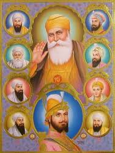

|
My Culture |
Every individual shares a unique and interesting identity which makes them different from other culture. We belong to Punjab which is popularly known for its Punjabi Sikh culture. Sikh culture is very vast and diverse in every field.
The founder of Sikh religion was Guru Nanak Dev Ji and ‘Khanda’ is the main symbol of Sikhism. The native language of my culture is Punjabi. The people of Punjab are very amiable, warm-hearted, hardworking and jolly in nature. The apparels of Punjab are a sign of a bright, colorful and vibrant culture. The traditional attire for women is Salwar-kameez or Lehenga-kurta with Dupatta or Phulkari, Paranda with traditional Punjabi jewellery and Punjabi jutti. The dress is incomplete without a Dupatta as it has the main significance in part of Punjabi culture. Men prefer Kurta-pajama with turban. Whereas in urban areas, people follow the latest fashion trends. Punjabi culture is known to celebrate each and every festival of their tradition with a lot of love and excitement. Some of the main festivals of my culture are Lohri (kite flying), Baisakhi (birth of Sikh religion), Teej, Kanak katai etc.

The festivals make the culture more fascinating. ‘Bhangra’ is the main dance form in which people dance to the loud drumming tunes of Dhol. ‘Giddha’ is another dance form practised mostly by women in which they sing Bolis together and dance to the tunes of it. Folk music is the heart and soul of Punjabi culture. The Dhol, Tabla, Chimta, Flute are some of the common instruments of folk music in my culture. One common thing in all Punjabi dishes is the ample amount of ghee or butter. ‘Saron da saag’ with Maki di roti and Lassi is a traditional cuisine of my culture. Therefore, a Punjabi wedding is a strong reflection of Punjabi Sikh culture in which several rituals, customs and traditions of the culture are performed from which ‘Anand Karaj’ is one of the major ceremony.Punjabi culture is one of the oldest and richest cultures of the world. The scope, history, sophistication and complexity of the culture are vast.The Punjabi Culture is the culture of the Punjabi people who are now distributed throughout the world.
Punjab also has leading academic institutions and scope for education. The main occupation is agriculture which is well irrigated and abounds with produce specific to the season.
Punjabis are renowned for their utmost interest in arts and crafts.Many phrases have decorative designs and handicrafts. Many things which are associated with art and craft of Punjab are known all over the world for their quality and beauty.
In conclusion, the Sikh culture teaches every individual to build a close, loving and strong relationship with God and believe that all are equal in the eyes of God.